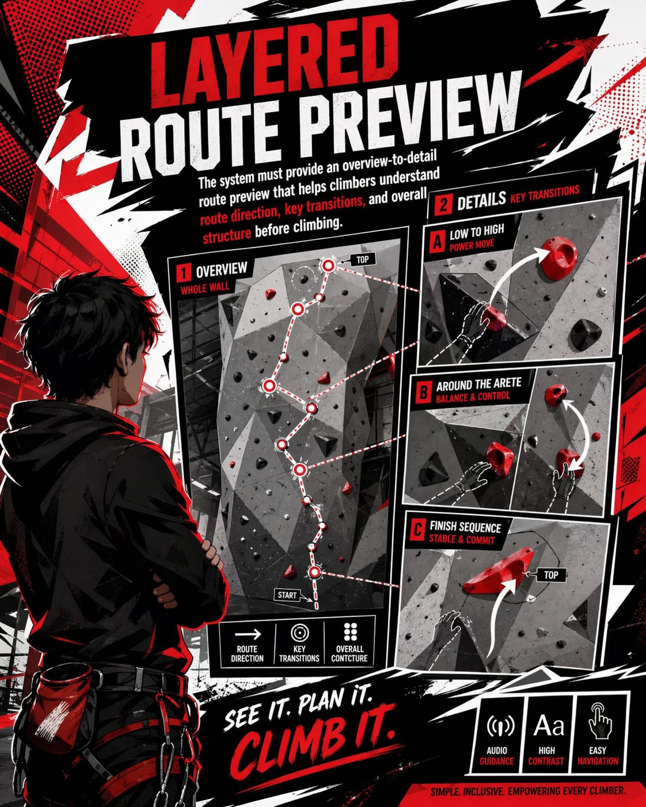
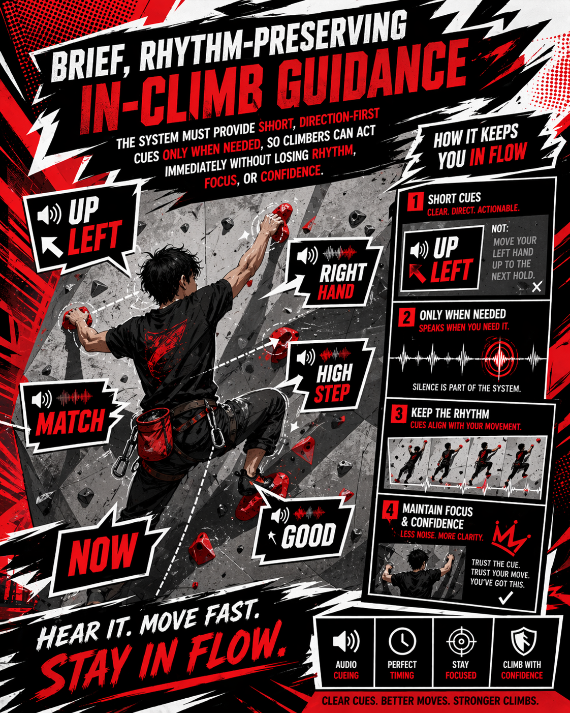
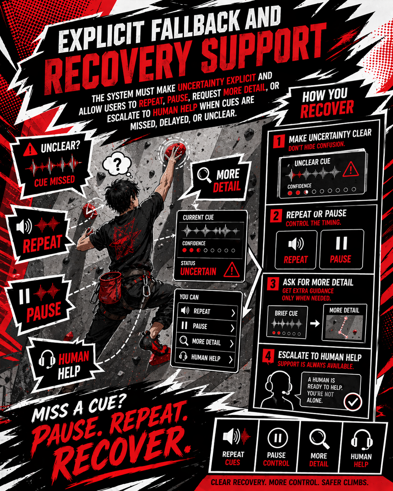

Blind or low-vision beginner climber
Needs a clear route preview, accessible guidance, confidence-building feedback, and a way to recover when cues are missed.
Target users, personas, evidence of life, current journey map, requirements list, and traceability.
Needs a clear route preview, accessible guidance, confidence-building feedback, and a way to recover when cues are missed.
Supports setup, safety awareness, route confirmation, and human fallback without taking over the whole experience.
Mobile onsite use in a noisy, visually dense, safety-critical environment where support must be fast and low-overload.
What we observed: route choice depends heavily on visual colour and wall layout.
Design insight: the app needs a simplified route preview before climbing.
What we observed: phone positioning and wall framing are hard to judge without sighted support.
Design insight: confirmation and fallback must include the assistant role.
What we observed: long instructions become difficult to process during movement.
Design insight: use short, direction-first speech cues.
What we observed: text size, contrast, and sound control need to be easy to reach.
Design insight: keep settings visible and simple.
What we observed: uncertainty creates hesitation if the system does not clearly explain what to do next.
Design insight: provide repeat, pause, and request-help options.
Arrives at the gym and chooses a beginner route with support.
Tries to understand hold order, direction, and key transitions.
Sets preferences, confirms phone position, and prepares to start.
Climbs while listening for brief cues and repeating them when needed.
Pauses, asks for clarification, reviews the climb, and plans the next attempt.
Route choice depends on visual information that may not be accessible.
Verbal route explanation is hard to remember once climbing begins.
Setup decisions can become stressful before the user feels ready.
Long or unclear guidance can interrupt rhythm and increase cognitive load.
When guidance fails, the user needs a clear next action rather than silent uncertainty.
Will this route be understandable?
I need enough information to solve it myself.
Setup needs to feel quick and trustworthy.
The cue must be short enough to act on.
I need to recover safely and understand what happened.
Make route access obvious from the first screen.
Give a layered preview from overview to key holds.
Save accessibility preferences and support assistant confirmation.
Use short audio cues and repeat controls.
Show fallback options and post-climb reflection.
Scan-first entry and beginner route context.
Camera scan plus route confirmation and simplified preview.
Accessibility settings, assistant check, and start confirmation.
Audio-first guidance with repeat, pause, and low-overload phrasing.
Explicit fallback, recovery support, and reflection summary.

The system must provide an overview-to-detail route preview before climbing.

The system must provide short, direction-first cues only when needed.

The system must allow users to repeat, pause, request detail, or escalate to human help.
| User Pain Point | Requirement | Feature |
|---|---|---|
| Cannot distinguish route clearly. | Route preview. | Camera scan + route confirmation. |
| Cannot read screen while climbing. | Audio-first guidance. | Short speech cues. |
| Gets confused when system fails. | Recovery support. | Repeat / pause / fallback. |
| Assistant support can become constant and tiring. | Bounded human handoff. | Assistant confirmation and request-help states. |